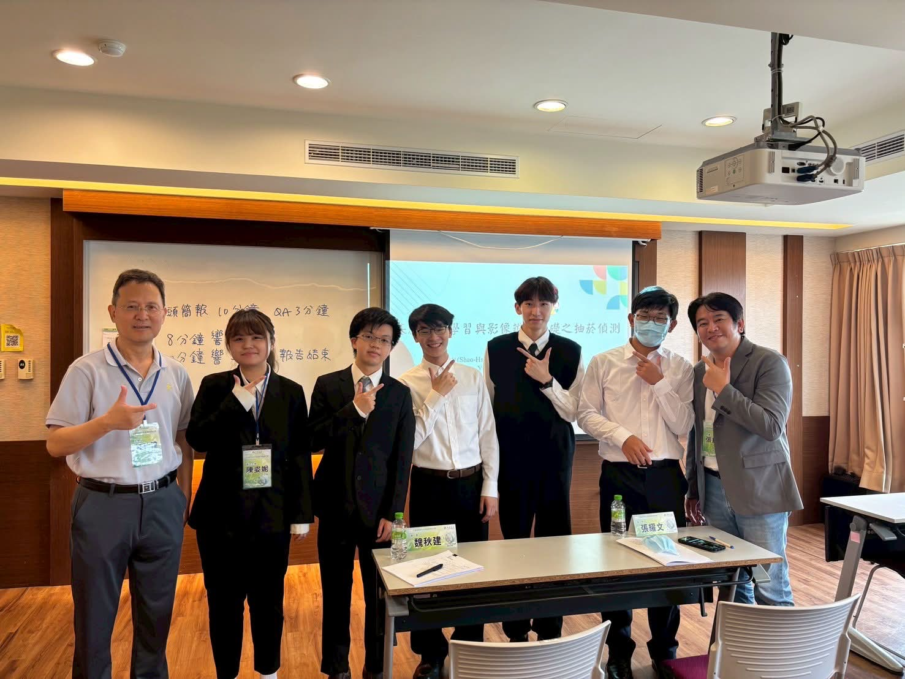

近年來人工智慧（AI）快速發展，已廣泛應用於各種資訊系統中。 透過 AI 技術，可以分析大量資料、提升工作效率，並協助企業做出更準確的決策。
在資訊管理領域中，AI 可應用於資料分析、影像辨識、智慧客服及自動化流程等。 我在大學專題中也曾接觸 AI 影像辨識技術，利用深度學習模型辨識抽菸行為， 讓我了解到 AI 在智慧校園與智慧管理方面具有很大的發展潛力。
未來我希望持續學習人工智慧、網頁開發及行動應用程式開發， 提升自己的實作能力，並將所學應用於更多資訊管理相關領域。

在大三下，我參與了中華大學舉辦的資訊管理研討會，展示團隊的專題研究成果。
透過此次研討會，我除了向其他師生介紹專題內容外， 也觀摩了許多不同學校的研究成果， 了解人工智慧、資訊管理及系統開發在不同領域的實際應用。
這次發表經驗提升了我的簡報表達能力、 團隊合作能力以及臨場應對能力， 也讓我更加確定未來希望持續朝資訊管理與人工智慧領域發展。